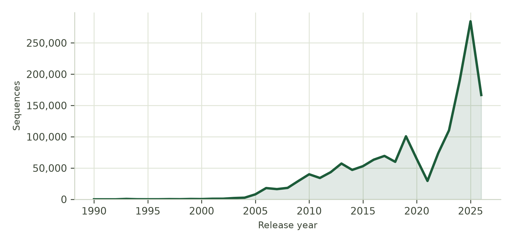
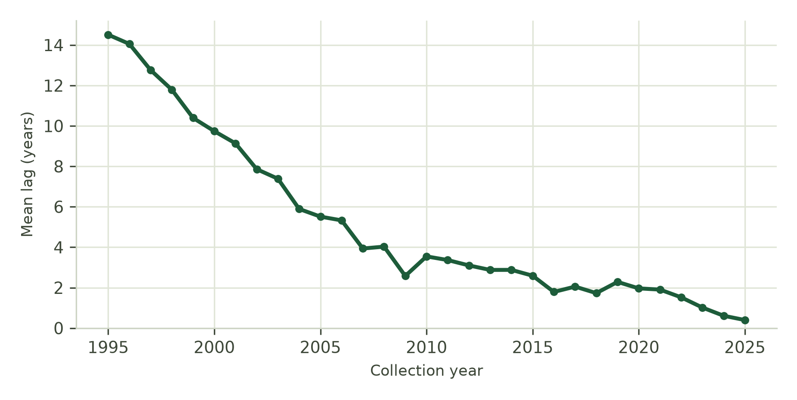
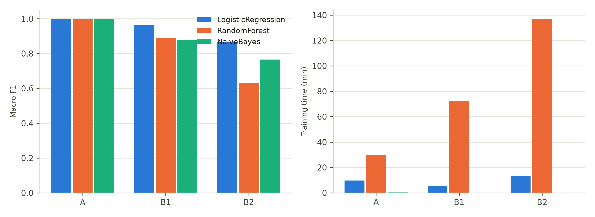
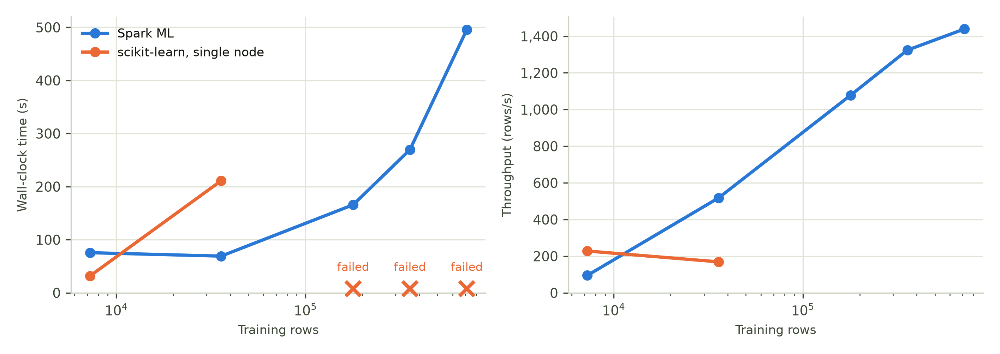
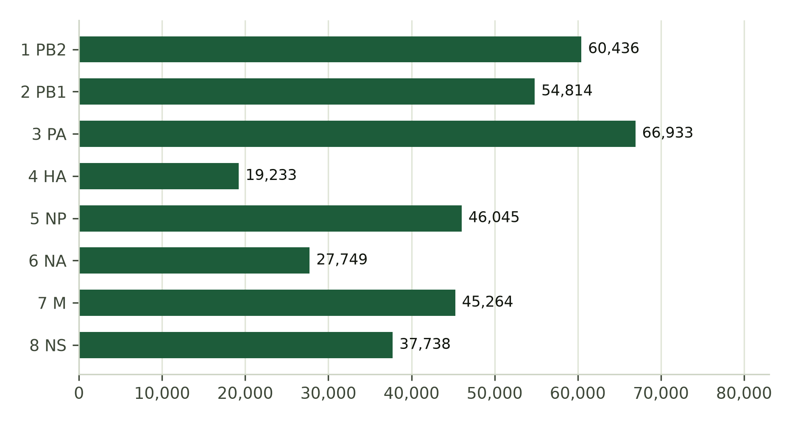
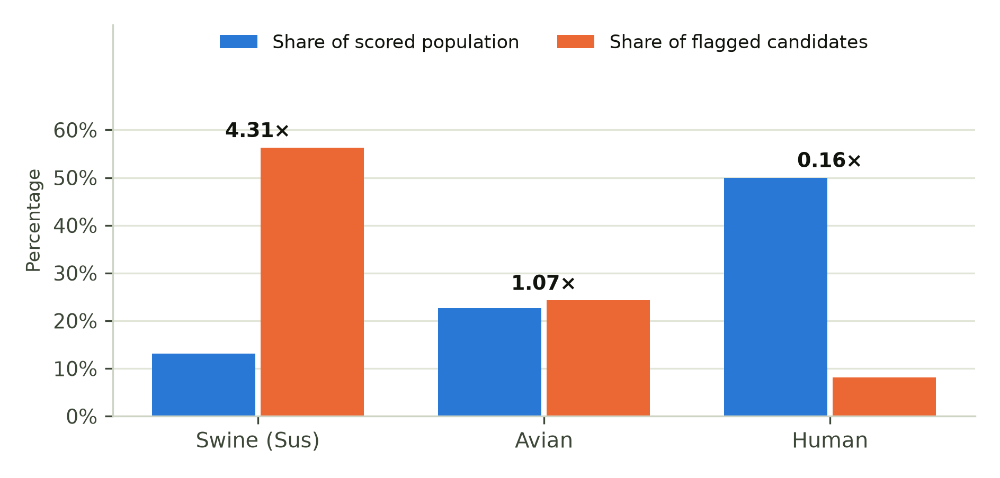

2. Materials and Methods
2.1. Data source and acquisition
All sequence data were obtained from the NCBI Influenza Virus Database. Because no single endpoint returns both structured metadata and nucleotide sequences, two retrieval paths were combined: E-utilities for metadata and vvsearch2 for FASTA records, joined on accession number. Requests were partitioned by collection year, with high-volume years further split by month to stay within server response limits, yielding 42 partitions. The retrieval process was made idempotent by recording completed partitions in a manifest, so interrupted runs resume without re-downloading. NCBI rate limits were respected throughout at three requests per second without an API key and ten with one. The complete retrieval required approximately 2.3 hours of wall-clock time.
The resulting corpus comprises 1,586,912 sequence records spanning 1902–2026 collection years, drawn from 172 countries and 601 host species, and totalling 2,570,555,392 nucleotides.
2.2. Quality control and deduplication
Four quality gates were applied before any downstream processing, and the number of records failing each gate was recorded rather than silently discarded (Table 1). Sequences shorter than 500 bp were removed because their k-mer vectors are too sparse for meaningful comparison; sequences longer than 2,600 bp were removed because they exceed the longest influenza A segment and are almost certainly assembly artefacts; and sequences with more than 5% ambiguous bases were removed because non-ACGT characters corrupt every k-mer window containing them.
Table 1. Quality control outcomes. Of 1,627,536 retrieved records, 1,586,912 passed all gates.
| Quality gate | Records removed | Percentage | Records retained |
|---|---|---|---|
| Length ≥ 500 bp | 36,388 | 2.236% | 1,591,148 |
| Length ≤ 2,600 bp | 49 | 0.003% | 1,591,099 |
| Ambiguous bases ≤ 5% | 4,187 | 0.257% | 1,586,912 |
| Duplicate accessions | 0 | 0.000% | 1,586,912 |
Exact duplicates were identified by SHA-1 digest over the nucleotide string rather than by accession, revealing that 43.69% of records are byte-identical copies: 1,586,912 records collapse to 893,599 distinct sequences. Duplicates were flagged rather than deleted. All modelling was performed on the 893,599 unique representatives, because training on the full set would both over-weight frequently sequenced strains and allow identical sequences to appear in training and test partitions simultaneously, inflating held-out accuracy without demonstrating generalisation. Geographic analyses retained all occurrences, since there each occurrence is a distinct observation.
2.3. Alignment-free feature representation
Features were derived without sequence alignment. Each nucleotide string was decomposed into all overlapping substrings of length k and their frequencies counted. At k = 8 the feature space contains 48 = 65,536 possible k-mers, of which 56,171 were observed in the corpus.
The alignment-free approach was chosen for a specific property of this corpus rather than for convenience. Only 0.68% of records carry the complete flag, so restricting analysis to complete genomes would discard more than 99% of the data. Alignment requires comparable regions between sequences, whereas k-mer composition remains computable on partial sequences.
The value of k was selected by ablation over k ∈ {4, 6, 8, 10}. Small k yields a feature space too narrow to separate distinct sequences; large k makes nearly every k-mer unique to a single sequence, leaving no shared signal to learn, while the storage cost escalates. Features were produced by a three-stage pipeline: term-frequency vectorisation, inverse document frequency weighting to down-weight k-mers present in nearly all sequences, and L2 normalisation so that longer sequences do not acquire larger vector norms. All vectors were stored in sparse form; the same matrix in dense form would require approximately 3.7 TB against 11.77 GB sparse, with a mean of roughly 1,630 non-zero entries per row.
2.4. Classification tasks
Metadata were used exclusively as labels and never as model inputs. Consequently the models never observe subtype, host, country or year when predicting, and any agreement between prediction and metadata constitutes evidence that the signal resides in the nucleotide composition itself. Three classification tasks were defined (Table 2).
Table 2. Classification tasks. Tasks B1 and B2 were deliberately separated because HA and NA define the subtype nomenclature whereas the internal segments do not.
| Task | Input | Target | Classes |
|---|---|---|---|
| A | Nucleotide string of one sequence | Genome segment 1–8 | 8 |
| B1 | Nucleotide strings of segments HA and NA | Subtype | 21 |
| B2 | Nucleotide strings of internal segments (1, 2, 3, 5, 7, 8) | Subtype | 21 |
The separation of B1 from B2 is the central design decision. Task B1 is close to tautological, since subtype H5N1 means hemagglutinin type 5 and neuraminidase type 1; its value lies in establishing an upper bound. Task B2 is informative precisely because the internal segments carry no definitional relationship to the subtype label, so any predictive ability above chance indicates that internal segments retain a trace of the strain constellation from which they derive.
2.5. Algorithms and model development
Three algorithms were compared, selected to represent different assumptions about high-dimensional sparse data. Logistic regression is a linear model whose parameter count grows linearly with the feature space and which yields calibrated probabilities, a property required by the candidate screening described in Section 2.7. Random forest is a non-linear tree ensemble capable of capturing interactions between k-mers but obliged to survey feature subsets at every split. Naive Bayes assumes conditional independence between features, an assumption that is demonstrably violated here because adjacent k-mers overlap in seven of their eight positions; it was included specifically to quantify the cost of that violation.
Each pipeline was implemented twice: once with Spark MLlib distributed over YARN, and once with scikit-learn on a single node. Both were evaluated on training fractions increasing from 1% to the full corpus, using logistic regression on Task A so that the comparison is like for like.
2.6. Similarity graph construction
A similarity graph was built from the same feature vectors. Exhaustive pairwise comparison is infeasible — 2,500 nodes alone require 3,123,750 comparisons per segment — so MinHash locality-sensitive hashing was used, which evaluates only candidate pairs falling into matching hash buckets. The Jaccard distance threshold was set at 0.12, chosen from a measured sweep rather than assumed: at 0.05 the graph is almost disconnected with mean degree 1.6, whereas at 0.25 and above the edge count expands rapidly and risks forming a single giant component that discriminates nothing. Connected components were computed by label propagation, with checkpointing at each iteration to prevent query-plan growth from exhausting driver memory. The resulting graph was loaded into a property-graph database to support variable-depth path queries that are awkward to express as repeated SQL joins.
Two clusters from different segments were linked when both occur in the same strain, producing a cross-segment co-occurrence network. Throughout this paper these clusters are referred to as similarity clusters and not as lineages: they are connected components of a k-mer similarity graph, and although the two often correspond, calling them lineages would claim more than the method establishes.
2.7. Candidate screening and statistical analysis
Reassortment candidates were flagged where the subtype predicted from the k-mer composition of internal segments disagreed with the recorded subtype at high model confidence. Because the models never observe host species, the host composition of the flagged set provides an independent validation signal.
Enrichment was computed against the scored population of 892,344 sequences — those possessing feature vectors and therefore eligible to be flagged — and not against the full archive, since sequences that were never scored could never become candidates. Raw enrichment cannot distinguish a biological signal from uneven sequencing effort across regions and periods, so a Cochran–Mantel–Haenszel odds ratio was computed over 17 strata of region × decade, comparing only within strata. Robins–Breslow–Greenland standard errors were used for the confidence interval. A multivariable logistic regression adjusting additionally for subtype was computed as a secondary analysis, with the caveat noted in Section 3.6.
2.8. Computational environment
All processing ran on a Hadoop cluster deployed as nine containers on a single physical host: HDFS with three DataNodes at replication factor 2 and 128 MB blocks, YARN with one ResourceManager and three NodeManagers providing 12 vCores and 18,432 MB of memory, Spark 3.5.9, a property-graph database, and a relational warehouse placed outside the cluster. YARN served as the sole resource manager for both MapReduce jobs and Spark applications, which makes performance comparison between the two engines legitimate because they contend for identical resources.
Because all components share one physical host, inter-node traffic never traverses a physical network. This limitation is revisited in Section 3.8.
3. Results and Discussion
3.1. Archive characteristics
The corpus is both large and accelerating. Fig. 1 shows annual release volume, which reached 284,484 sequences in 2025 alone.

Fig. 1. Sequences released per year from 1990 onward. The final year was incomplete at the time of retrieval.
Taxonomic and geographic coverage are markedly uneven. Subtypes H3N2 and H1N1 together account for 63.13% of the corpus despite 143 distinct subtypes being recorded. Geographically, the United States contributes 62.32% and North America 67.29%, while the entire African continent contributes 1.66% with 26,309 sequences. This distribution almost certainly reflects sequencing capacity rather than viral prevalence, and any global inference drawn from this archive inherits that bias; models trained on it will be weakest precisely where data are sparsest.
A further structural bias affects the reassortment analysis directly. Segment 4 (hemagglutinin) carries 269,754 sequences, roughly 1.36 times the eight-segment mean, because it is both the dominant antibody target and the subtype determinant and is therefore sequenced preferentially. Complete eight-segment genomes are consequently far rarer than the corpus total suggests, which constrains any constellation-level analysis.
3.2. Timeliness of the archive

Fig. 2. Mean interval between sample collection and public release, by collection year. The year 2026 is excluded because samples collected and released in the same year necessarily show zero lag.
Samples collected in 2019 required a mean of 2.28 years to reach the public archive; for samples collected in 2025 the interval was 0.40 years, a reduction of approximately 5.7-fold. This shift changes what the archive can support. At a two-year lag, archive analysis is necessarily retrospective. Below half a year, the same archive begins to support near-operational monitoring — and it is that capability which creates the requirement for pipelines of the scale described here.
3.3. Classification performance
Table 3. Classification results for nine models. The highlighted row is the only model whose log loss exceeds the chance baseline.
| Task | Algorithm | Macro F1 | Accuracy | Log loss | Chance log loss | Train time (s) |
|---|---|---|---|---|---|---|
| A | LogisticRegression | 0.9998 | 0.9998 | 0.0017 | 2.0794 | 583.0 |
| A | RandomForest | 0.9977 | 0.9977 | 0.0906 | 2.0794 | 1802.6 |
| A | NaiveBayes | 0.9997 | 0.9997 | 0.0103 | 2.0794 | 13.8 |
| B1 | LogisticRegression | 0.9654 | 0.9658 | 0.1143 | 3.0445 | 325.0 |
| B1 | RandomForest | 0.8900 | 0.9004 | 0.4569 | 3.0445 | 4333.9 |
| B1 | NaiveBayes | 0.8795 | 0.8725 | 2.3188 | 3.0445 | 5.9 |
| B2 | LogisticRegression | 0.8678 | 0.8705 | 0.4355 | 3.0445 | 779.6 |
| B2 | RandomForest | 0.6292 | 0.6747 | 1.0615 | 3.0445 | 8231.2 |
| B2 | NaiveBayes | 0.7651 | 0.7566 | 3.3654 | 3.0445 | 12.9 |

Fig. 3. Macro F1 (left) and training time (right) by task and algorithm.
Task A reached macro F1 0.9998 with log loss 0.0017 against a chance baseline of 2.0794. This result is expected rather than notable: the eight influenza segments differ substantially in both composition and length, from 890 nucleotides for NS to 2,341 for PB2, so separating them is an easy problem. The result is best read as verification that the pipeline functions correctly.
The substantive finding is the small gap between Tasks B1 and B2. With hemagglutinin and neuraminidase available, macro F1 reached 0.9654. Using only the six internal segments, macro F1 remained 0.8678, a decrease of just 0.0976, with log loss 0.4355 against a chance baseline of 3.0445. Since the internal segments bear no definitional relationship to subtype nomenclature, this indicates that they carry a strong trace of the strain from which they derive. That trace is what makes the candidate screening in Section 3.5 possible: when the internal segments of a strain signal a subtype different from the recorded one, it suggests that its segments do not share a common ancestry.
A methodological caution emerges from naive Bayes on Task B2. Its accuracy of 0.7566 appears acceptable, yet its log loss of 3.3654 exceeds the chance baseline of 3.0445: the model assigns high probability to incorrect answers. The cause is the violated independence assumption, since overlapping k-mers cause what is effectively one piece of evidence to be counted repeatedly, inflating confidence. Had evaluation stopped at accuracy, this model would have appeared a reasonable choice at 12.9 seconds of training against 779.6 seconds for logistic regression, and that choice would have corrupted every downstream analysis depending on its probabilities.
Random forest was outperformed on all three tasks while also being the most expensive, requiring 137 minutes on Task B2 for a macro F1 of 0.6292. The cause is structural: across 65,536 predominantly zero columns, every tree split must survey feature subsets that are almost entirely uninformative, whereas a linear model benefits from high-dimensional sparsity by assigning small weights across many features simultaneously. Logistic regression was therefore adopted for all downstream analysis.
3.4. Distributed versus single-node execution
Table 4. Distributed versus single-node training across increasing fractions of the corpus. Highlighted rows mark runs that scikit-learn could not complete.
| Fraction | Training rows | Spark MLlib (s) | scikit-learn (s) | Spark throughput | Macro F1 |
|---|---|---|---|---|---|
| 1% | 7,251 | 75.6 | 31.7 | 95 rows/s | 0.9989 |
| 5% | 35,854 | 69.1 | 211.1 | 518 rows/s | 0.9999 |
| 25% | 178,783 | 165.8 | failed | 1,078 rows/s | 0.9998 |
| 50% | 356,839 | 269.5 | failed | 1,324 rows/s | 0.9998 |
| 100% | 713,440 | 495.5 | failed | 1,439 rows/s | 0.9998 |

Fig. 4. Training time (left) and throughput (right) against training-set size on logarithmic axes. Crosses mark runs that failed to complete.
At 1% of the data (7,251 rows) scikit-learn was decisively faster, 31.69 seconds against 75.58. Spark pays a fixed overhead — launching executors, submitting to the resource manager, distributing data — that exceeds the computation itself at this scale. At 5% the ordering reverses, 69.12 seconds against 211.12. From 25% onward scikit-learn did not merely slow but failed outright, unable to hold the feature matrix on a single node.
Throughput reinforces the same conclusion from a different direction. Spark rose from 95 to 1,439 rows per second as the workload grew, because the fixed scheduling cost amortises, whereas scikit-learn declined from 228 to 169 rows per second before failing. Macro F1 varied only between 0.9989 and 0.9999 across all fractions. What distributed execution purchases here is therefore not improved accuracy but the ability to complete the task at full scale at all — a distinction often blurred in comparisons of this kind.
A separate comparison isolated the processing engines. The identical k-mer frequency computation was executed once as a MapReduce streaming job and once in Spark SQL, producing byte-identical results of 56,171 unique k-mers. MapReduce completed in 42.4 seconds against Spark's 65.7. This does not indicate general superiority but reflects the shape of the task: a single aggregation pass without iteration is the ideal case for MapReduce, whereas Spark pays scheduling overhead it cannot recover. The combiner reduced map output from 2,964,548 to 265,159 records before shuffle, a reduction of 91%.
3.5. Graph structure

Fig. 5. Similarity edges per genome segment at comparable node counts.
The graph comprises 358,212 edges across the eight segments, and its density is markedly non-uniform. Segment 3 (PA) produced 66,933 edges while segment 4 (HA) produced 19,233, a 3.5-fold difference at nearly identical node counts. This asymmetry is biologically interpretable: hemagglutinin is the principal antibody target and therefore under the strongest immune selection pressure, changing fastest, whereas internal segments such as the polymerase genes are far more conserved and consequently exceed the similarity threshold far more often.
Component sizes follow a long-tailed distribution: 905 components contain two to five sequences while 29 exceed one hundred nodes. This shape is characteristic of viral populations, in which many rare variants coexist with a few widely circulating strains.
3.6. Candidate screening and host enrichment
Screening flagged 1,990 sequences from 1,238 strains at a mean confidence of 0.909. The pattern of disagreement is not random: the most frequent mismatches involve H1N1, H1N2 and H3N2, precisely the subtypes that circulate in swine and that most frequently exchange segments in nature.

Fig. 6. Host composition of the scored population compared with the flagged candidate set, annotated with enrichment ratios. Host species was never a model input.
Candidates concentrate 4.31-fold in swine and are depleted 0.16-fold in humans, despite host species never entering the model. Swine are long established as a mixing vessel for influenza, their respiratory tract admitting both avian and human viruses and thereby facilitating reassortment. The pipeline recovers this pattern without ever being given any information about it, which constitutes independent evidence that the captured signal is biological rather than an artefact of metadata error.
Table 5. Confounder-adjusted association between swine host and candidate status.
| Measure | Value |
|---|---|
| Mantel–Haenszel odds ratio | 10.86 |
| 95% confidence interval | 9.69–12.17 |
| CMH chi-square | 2555.7 |
| Strata (region × decade) | 17 |
| Scored population | 892,344 |
| Flagged candidates | 1,990 |
The adjusted odds ratio of 10.86 (95% CI 9.69–12.17) is higher than the crude enrichment of 4.31-fold, indicating that pooling across strata had masked the signal rather than created it: within individual regions and decades the contrast is sharper than in aggregate. The objection that swine are simply sequenced more intensively is therefore not supported.
The secondary logistic regression returned an odds ratio of 18.38, but that model adjusts for subtype while candidate status is itself defined by subtype disagreement, raising a risk of overadjustment. The Cochran–Mantel–Haenszel estimate is therefore reported as primary.
3.7. A negative result on graph-native screening
A further experiment attempted to flag candidates directly from graph structure without using subtype at all. A strain was flagged when its constellation contained a low-support cluster pairing while both constituent clusters were individually high-degree — common building blocks in an uncommon combination.
The operator did not work. On a strain-aware graph of 3,230 eligible strains it flagged 697, or 21.6% of the population, with swine enrichment of only 1.30-fold against 4.31-fold for the subtype-based approach. The cause is cluster granularity: at the threshold used, components average roughly seven sequences, whereas true influenza lineages are considerably coarser. "Different cluster" therefore does not imply "different lineage", and the premise collapses because at that granularity nearly every cluster pairing is rare.
This result is reported because it is measured and diagnosed, and because it delimits the alignment-free approach: k-mer composition can group sequences, but at this resolution it does not substitute for phylogenetic lineage assignment.
3.8. Limitations
Three limitations constrain the interpretation of these results. First, the output is a set of candidates rather than confirmed reassortment events; confirmation requires per-segment phylogenetic analysis establishing that the segments of a strain derive from distinct lineages, which was outside the scope of this work. Second, the similarity graph was constructed on a sample of at most 2,500 nodes per segment rather than on the full corpus, so while the cluster structure is informative the absolute counts apply to the sample. Third, all performance measurements were taken on a single physical host, so inter-node traffic never crossed a physical network; relative comparisons between processing engines remain valid because both were measured under identical conditions, but the absolute figures cannot be generalised to a production cluster.
The host-enrichment result provides reasonable confidence that most of the captured signal is biological, but each candidate still requires individual verification.